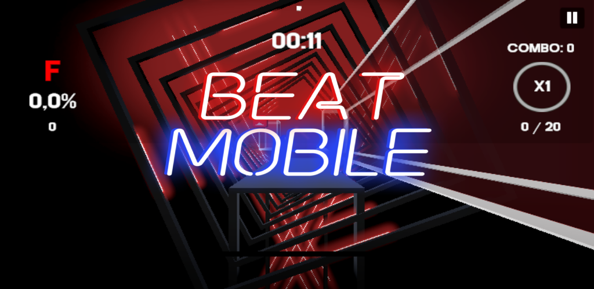

Juego de ritmo Android / 2022–2026
BeatMobile
Juego de ritmo para dispositivos móviles desarrollado en Unity, capaz de cargar y reproducir mapas personalizados de distintas versiones de Beat Saber.

Contexto
El proyecto nació como trabajo de maestría en 2022 y se fue complementando con los años. En 2026 fue retomado formalmente para convertirlo en una aplicación mantenible, escalable y preparada para distribución.
Alcance
Incluye catálogo local, navegación, configuración, gameplay, puntuación, audio, descargas, parser JSON multiversión, integración BeatSaver, detección de mods requeridos y bloqueo de mapas incompatibles.
Reto
Reproducir mapas complejos en móvil manteniendo sincronización entre notas, paredes, arcos, eventos, audio y efectos, con soporte parcial para Chroma, Noodle Extensions, Heck y Mapping Extensions.
Aporte
Refactorización completa del proyecto legado aplicando Clean Code, SOLID y separación de responsabilidades. Implementé arquitectura modular, controles táctiles y de teclado, pooling, perfiles gráficos, persistencia, manejo robusto de errores y pruebas EditMode/PlayMode.
Resultado
Se transformó un prototipo universitario difícil de mantener en una base modular y extensible, capaz de reproducir mapas de diferentes generaciones, integrar contenido remoto y soportar mecánicas y efectos avanzados con foco en rendimiento móvil.